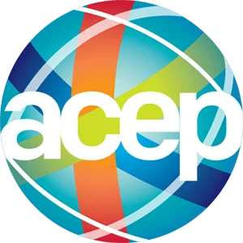
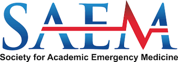
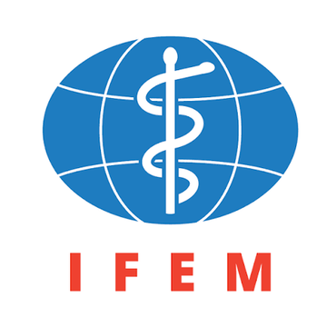
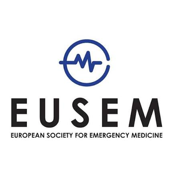
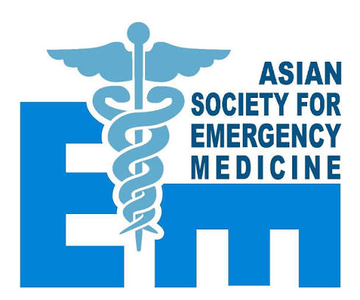
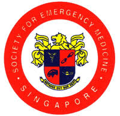
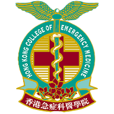

← 回到主頁
20 場已結束的會議，1998–2025。 今年與之後的場次、投稿死線都在主頁。
ACEP 美國急診醫師學會Scientific AssemblySAEM 美國學術急診醫學會Annual MeetingIFEM 國際急診醫學聯盟Global Congress / ICEMEUSEM 歐洲急診醫學會European EM CongressASEM 亞洲急診醫學會Asian Conference（ACEM，兩年一次）SEMS 新加坡急診Annual Scientific MeetingHKCEM 香港急症科醫學院學術活動






